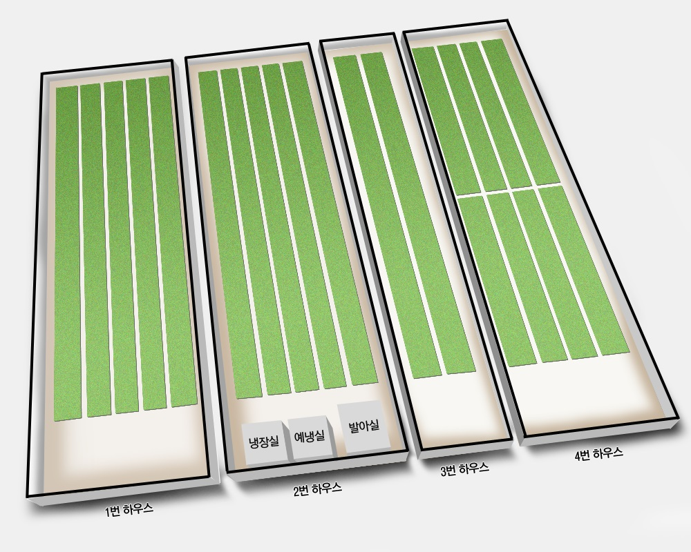

Location Monitoring
Monitoring
Location Monitoring
Location Explor
Root
그린트리플러스
이천농장
리테일테크
본사사옥
배너 닫기
· 거점명
· Auto Reflash
On
Off
+ 전체화면
UB센터1

UB센터 센서1
Temperature
12.2
℃
Humidity
12.2
%
CO2
12.2
ppm
WaterTemperature
12.2
℃
Light
12.2
℃
PH
12.2
pH
EC
12.2
mS/c
센싱시간
2016-05-03
오후 02:34:12
Chart Explorer
UB센터1
· 조회일
조회시작일
~
조회종료일
· 센서종류
:: 선택하세요
Temperature
Humidity
CO2
WaterTemperature
Light
PH
EC
· 센서 주기
:: 선택하세요
1시간
2시간
3시간
조회